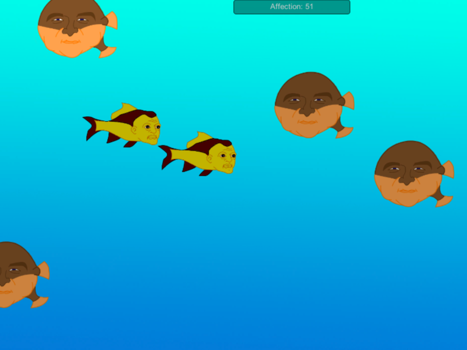

Unity Fishtank
This interactive fishtank was a project I did for one of my classes. The User can interact with the fish in the tank by clicking on them. Each fish has an affection rating, which increases or decreases based on where you click it. When a fish reaches a high enough affection, it will reproduce and split into two fish. However, if its affection is too low, it will get angry and try to eat the other fish in the tank.
My goal was to create an application that didn't demand any interaction from the User. The User would be free to click on the fish at any point and curate their tank, but they could just as easily sit back and watch the fish float around the tank.
Visually, the game was inspired by the game Seaman. While giving fish human faces seemed like a strange choice, I feel like it payed off overall. The different faces gave each of the fish more of a personality, and the strangeness of the whole situation was attention-getting. Clicking on the fish became a lot more fun when you got to see their reactions afterward.
 back to projects